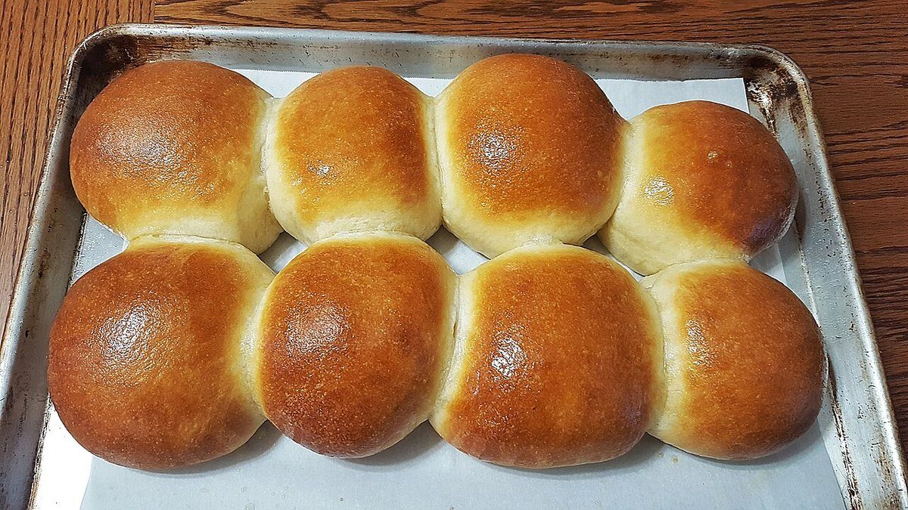

パン屋 / BAKERY
GOODTIMEBAKERS
グッドタイムベイカーズ
沖縄県石垣市大川にあるパン屋「Good Time Bakers(グッドタイムベイカーズ)」のご案内ページです。営業時間やメニューなど、詳しいことは準備中。電話とInstagramでご確認いただけます。

準備中
制作側の連想
「Good Time」から、タイムカードを思いついた
店名の由来は分かりません。制作側は「Time(時間)」という言葉から、出勤・休憩・退勤を刻む「タイムカード」を連想し、このサイト全体を一枚のタイムカードに見立てました。お店の理念・由来とは無関係の、制作側の連想です。下の「--:--」は打刻前の空欄で、実際の営業時間は準備中です。
打刻欄(イメージ)
出・休・退の三つの欄
写真はお店のものではなく、国外・撮影地不明のフリー素材です。欄の見出しは遊びで、お店の作業工程を示すものではありません。
- 出出勤の欄--:--

生地のイメージ 打刻はまだ空欄です。
- 休休憩の欄--:--

膨らんだ生地のイメージ 打刻はまだ空欄です。
- 退退勤の欄--:--

焼き上がりのイメージ 打刻はまだ空欄です。
ご案内
確認できていること
| 所在地 | 〒907-0022 沖縄県石垣市大川514-2 |
|---|---|
| 電話 | 0980-87-8547 |
| 営業時間 | 準備中 |
| 定休日 | 準備中 |
| ご予約 | 準備中 |
| 駐車場 | 準備中 |
| SNS | Instagram @goodtime_bakers |